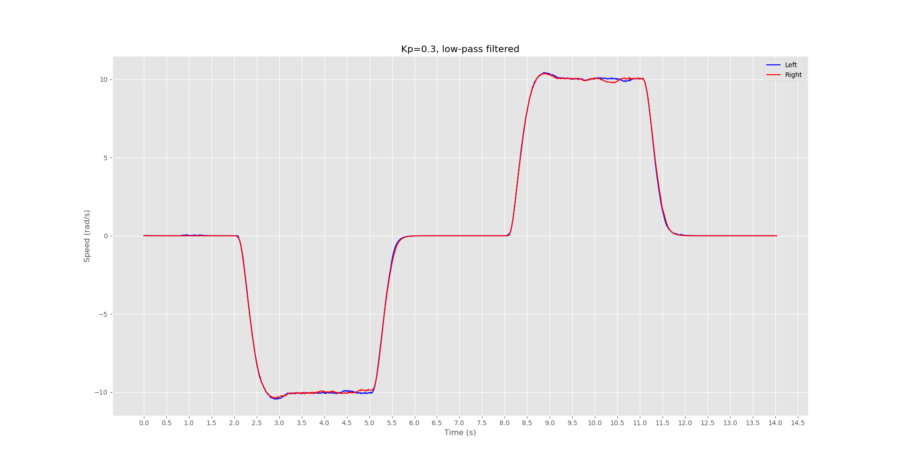
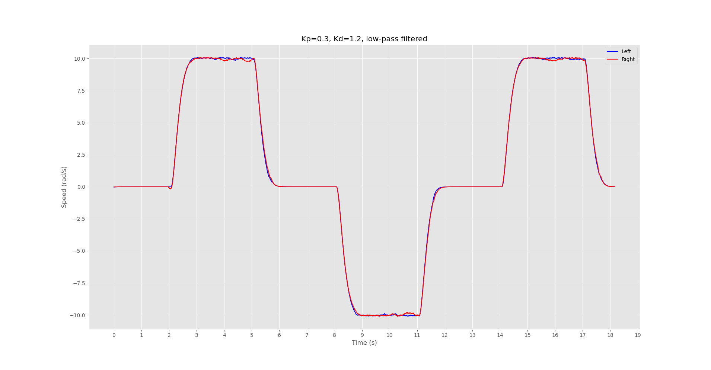

Overview
VanGo is a differential drive robot for drawing SVG images. Put simply, VanGo is a wheeled mobile robot capable of trajectory tracking, with the added feature that the trajectory is generated from an SVG image and the robot holds a marker which is brought into contact with the page while the robot is on the desired path, thus drawing the SVG image.
Control
VanGo's control architecture is comprised of a lower level speed control loop and a higher level trajectory tracking controller. From a user perspective, the lower level control loop can mostly be ignored, or at least treated as a black box and not modified, while the higher level controller may leave more room for customization.
Low-Level Speed Controller
Running on the ESP32 microcontroller, a timer based interrupt is resposible for reading the quadrature wheel encoders to compute the speed of the wheels. Experimentally it was determined that a simply proportional controller was sufficient for closed-loop speed control, although Proportional-Derivative (PD) control was also tested. Although PD control results is a smoother trajectory with less overshoot, the slower response was not worth the minimization of overshoot. Either way, both P and PD controllers work fairly well for closed-loop speed control, and if one is preferred by the user, the gains may be adjusted in the firmware and reflashed to the board. For more information on editing and flashing firmware, see Development.
The two images below show the speed controller response for both the Proportional and Proportional-Derivative controllers.


High-Level Trajectory Controller
The vango-client implements a trajectory tracking algorithm which is used to follow a trajectory defined
by a set of waypoints.
There are many different trajectory tracking algorithms in existance, however at this time only one,and perhaps the most basic one,the PID controller, has been implemented for the VanGo robot. There are various ways a PID controller can be applied to the trajectory tracking problem, however the method I've chosen to implement is to use a PID controller for angular velocity control. To move the robot from its current (x, y) to some goal position which is presumably along the target path, the algorithm works as follows:
- Read the current pose (computed from wheel odometry) via BLE
- Compute the target angle as \(atan2(y_{goal} - y, x_{goal} - x)\)
- Let the error be the minimum angle between the robots current heading and the target heading
- Compute the control signal from the PID controller for the given error. This control signal is chosen to represent the angular velocity of the robot.
- The desired motion of the robot is then represented as a 2D twist (body velocity), using the computed target angular velocity, a constant x velocity of your choice, and a y velocity of 0.0 (which assumes no wheel slipping)
- Compute the left and right wheel speeds needed to achieve the target twist
During development, there was a choice to be made regarding whether the trajectory controller will operate at the client application level or the firmware level. Both options have positives and negatives and will be briefly discussed below. In the end, it was chosen to operate the trajectory controller at the client application level.
Client-Side Trajectory Controller
A client side trajectory controller works by implementing the trajectory tracking algorithm in the vango-client
application. The controller will obtain the robots current pose using bluetooth low-energy (BLE) and compute the necessary wheel speeds for tracking the desired trajectory, and send those target wheel
speeds back to the robot over BLE.
Pros
- Faster development time since you will not need to reflash the microcontroller
- Easier to test different trajectory tracking algorithms or enable several algorithms to be available as options to the user
- Can take advantage of a client machine with higher computing power than the microcontroller
Cons
- Control loop speed is limited by BLE read/write latency. In it's current state, loop speeds top out around 30Hz.
Firmware-Side Trajectory Controller
An alternative way to implement the trajectory tracking controller would be to implement the controller in the firmware on the microcontroller, obtaining the target path to follow from the client over BLE. Pros and Cons are listed below.
Pros
- The MCU is capable of more precise and consistant timing through the use of hardware timers and interrupts
- BLE communication latency is no longer a concern since waypoints could be sent and processed beforehand
Cons
- Resources are somewhat limited on the MCU and may impose practical limits of which algorithms can be employed
- Slower development time since for the most part, modifications to the trajectory tacking algorithm require reflashing the board
Although performance/timing of the control loop could potentially be better if implemented in the MCU, it was determined that easy customization of algorithms as well as development time are key aspects of the project, therefore a client-side trajectory tracking algorithm was employed.